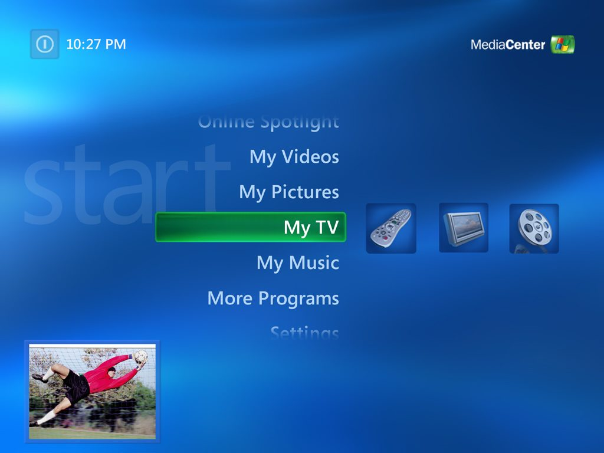

Email, Agenda, Feeds, les outils pour s'organiser aujourd'hui ...
This post was originally written in French.
Comme je suis toujours à la recherche de nouveaux outils pratiques pour travailler plus efficacement (en pensant encore naïvement que l'outil est la solution alors que je sais que c'est moi le problème), je me suis dit que ca pourrait intéresser d'autres lecteurs d'énumérer les outils que l'on utilise aujourd'hui chez TELIO, ma super startup et puis à la maison également.
@Work
Au bureau, en moyenne on est 4 donc on est pas très nombreux mais même déjà avec deux personnes les problémtiques classiques se posent.
Avant : Gérer un serveur mail, problèmes permanement avec le serveur SMTP utilisé, pas de webmail digne de ce nom, forward sur l'adresse perso pour avoir un webmail convenable, pas de backup, pas d'anti spam.
Maintenant : Au niveau mail (et pour le reste, voir plus bas) on utilise Google Apps for Domains. En gros, c'est tout les outils Google mais sous votre domaine propre (en l'occurence telio.be)
Donc, tout le monde chez Telio à une adresse mail propre (ca c'est de l'avantage salarial :-) et donc un accès webmail (ou POP ou IMAP puisque google fournit les 3).
Une fois inscrit et les MX records configurés etc .. on a un gmail personnalisé tout à fait équivalent a google mail normal sauf qu'il est "brandé"Variationen von texas holdem poker online. avec son propre nom de domaine.

Coût : 50 USD par an / par user:
- Un vrai web mail
- Un accès en POP ou IMAP si nécessaire
- Un anti spam qui fonctionne
- Un anti virus qui fonctionne
- Un calendrier partagé pour la société + personnel si nécessaire
- Un compte chat qui fonctionne
Après dans les trucs que ne j'utilise pas du tout
- Google Docs (web based spreadseet, word processor, etc ..)
- Google Sites (tout nouveau, permet de faire des sites partagés rapidement .. a tester)
Link : http://www.google.com/a/help/intl/en/index.html
Calendrier
Avant: Un calendrier en PHP que l'on hostait sur notre propre serveur. Impossibilité de synchroniser quoique ce soit ... Patrice utilise encore ca je pense .. :-)
Maintenant : Comme mentionné plus haut, avec un compte Google Apps For Domains, on a donc aussi un calendrier partagé et personnel tout intégré avec son compte google. Le calendrier est tout simplement fantastique.
Synchronisation
Petite note introductive sur ce chapitre. Pour moi c'est la clé de tous les outils que j'utilise étant donné que je travaille sur plein de machines dfférentes (au bureau, chez moi, chez des clients, etc ..) et j'ai un PDA
Et je n'utilise ni Outlook, ni Exchange.
Avant: Ben rien :-)
Maintenant : Je synchronise uniquement mon calendrier et plus récemment mes tâches (voir plus bas). Pour cela, il suffit d'installer "SyncMyCal" pour Windows Mobile et votre calendrier est synchronisé avec Google.
Il exsite bien d'autres solutions mais celle la a passé le test des 10 minutes (download, install, run..).
Cout : 25 USD (one time license)
Accès à distance
Par accès à distance j'entends l'accès à des machines au bureau comme si on était au bureau.
Petite note pour les geeks. Comme on a une connexion avec une IP soi disant dynamique on utilise un DNS dynamique configuré chez DynDns.org (gratuit)
Avant : VNC, pas mal du tout mais faut ouvrir des ports etc ..
Maintenant : LogMeIn (grâce a Patrice) + Remote Desktop
En gros, LogMeIn est un VNC évolué qui utilise un serveur intermédiaire. Il faut installer un client sur chaque machine que l'on pouvoir prendre à distance et ce client se charge de gérer toute la problématique des IP changeantes etc.
Coût: gratuit
Gestion des tâches
Avant: Rien, même si j'ai essayé pas mal de trucs. Celui qui a marché le mieux c'était un outil de GTD qui tournait sur le PC et sur un PDA mais il n'avait pas de synchro web donc impossible de consulter ou rajouter des tâches quand on était sur le net.
Maintenant: J'en parle ici même si je ne l'utilise que depuis quelques semaines. http://www.rememberthemilk.com. En gros c'est un task manager tout simple (listes, due dates, etc ..) mais il a un plugin "Google Mail" ! et pour PDA

L'intégration avec Gmail est super bien finie et pensée. On starre un mai, et hop il rajoute une taches associées. On répond à ce mail, hop, la tâche est marquée "complete".
Coût: Gratuit pour RTM web based + plugin Google Mail. Pour synchroniser 25 USD par an.
Rester informer (Google Reader)
Comme pour la synchro, mon besoin en lecteur de flux RSS était assez particulier. En gros, je dois pouvoir lire mes feeds de n'importe ou. Donc utiliser un client local n'était pas envisageable.
Avant: FeedOnFeeds, lecteur de feeds server-side installé sur un serveur en PHP. C'était super, ca me permettait de lire mes feeds de partout.
Maintenant: Une fois que Google Reader est arrivé, FoF est passé à la trappe. Pour ceux qui ne connaissent pas, c'est à tester rapidement (même Patrice a été convaincu malgré ces quelques mois de : Mais si NetVibes c'est mieux y a des tabs .. )
Coût: gratuit
@Home
Passons maintenant à mon équipement maison. En gros il va s'agir ici que de PC, de net et de télé (je pense que ca n'intéresse grand monde de savoir ce que j'ai comme chaudière - je ne sais même pas moi même :-)
Infrastructure de base
Telenet TurboNet DigiPack : 20Mbps (35Gig de download/upload) + Téléphone + Télé digitale.
En gros, le net marche super bien, le téléphone, je ne connais même pas mon numéro et pire, je ne sais même pas ou est le téléphone. La télé par contre, je suis très mitigé. En soi c'est bien (qualité extra, etc..) mais le décodeur avec HD intégré n'arrive pas à la cheville d'un Media Center 2005 ou Vista (cfr après)
Coût : 65 EUR par mois sans le téléphone. Beaucoup trop cher pour ce que c'est.
Hardware
un Mac Book Pro, et oui depuis peu je suis devenu un Mac Fan :-) Pour la maison, honnêtement, y a rien de mieux. C'est beau, ca marche, et c'est fun (ah oui c'est cher aussi, mais bon .. )

Un Media Center ACER Idea 500 :
Télé
Mon meilleur achat de tous les temps. C'est tout simplement exceptionnel. Le hardware est impécable (silencieux - hein Patrice) et puis surtout l'interface (Windows Media Center 2005)

J'ai testé déjà pas mal d'autres interfaces et honnêtement aujourd'hui il n'existe rien de mieux. C'est simple, intuitif, beau. Magali l'utilise sans aucun problème.
"Paperless Office" @Home
Comme j'en ai déjà parlé dans un post précédent. J'ai acheté il y a bientôt un mois un scanner ScanSnap 510M et je scanne tout les documents que je dois (ou non d'ailleurs) conserver.
Notes VISA, factures, documents officiels, etc ...
Pour gérer les document scannés j'utilise DevonThink Pro qui intègre un OCR (ReadIris) et un système de classement automatique. En gros, une fois que vous avez encodé un vingtaine de document il n'est plus nécessaire de les classer. DevonThink vous propose lui même les catégories qu'il pensent etre pertinentes, il ne faut plus que cliquer "Ok".
Ce scanning est tellement efficace, qu'on le fait maintenant au bureau avec docunit search qui s'intègre directement en sortie du scanner. Comme les documents sont automatiquement OCRisés, inutile de les classer, on les retrouve en mode full text sans problèmes.
Eh bien voilà déjà un premier jet de tous les outils avec lesquels je joue travaille :-)
Toutes les suggestions sont les évidemment les bienvenues :-)
Pierre
Comments 3
Didier, 2008-03-04 15:08
Quel post !!! T'as pas les gosses? Tu dors sur le divan?
patrice.roulive, 2008-03-05 07:47
Avant de commenter sur le contenu, comme Didier, je reste sans voix sur la taille du post de Pierre. Même pour le mémoire de fin d'étude il n'avait pas écrit autant ;-)
insurance life ing company of reliastar, 2009-01-08 02:42
new ing insurance reliastar company life reliastar york company ing insurance life